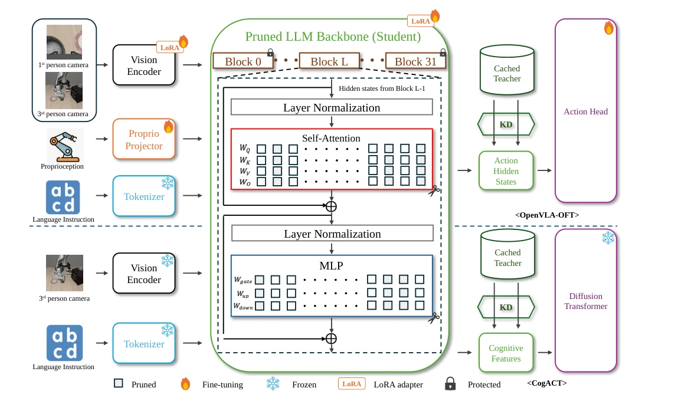
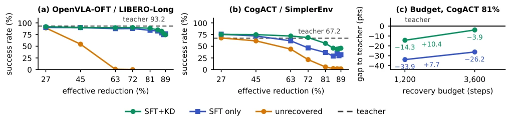
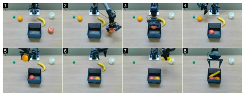

This paper performs a brilliant "cardiopulmonary resuscitation" on VLA models that have been pruned to the point of "brainstem removal". The authors did not engage in reinforcement learning with real robot loops (RLRC [7]) requiring hundreds of GPU hours, but cleverly implemented "offline distillation", caching the teacher model's hidden states for the student to directly imitate. The results were quite striking: after pruning 63% of parameters, standard fine-tuning could only recover a 0.8% success rate, while adding hidden state distillation pulled it back directly to 89.7%, truly bringing the dead back to life. However, this method also fails under extreme compression (>85%), where the model directly "dies of brain death", and distillation alone cannot revive it. Additionally, although the paper boasts "fully offline", it essentially relies on perfect data generated by the teacher model; if the teacher itself has hallucinations, the student might learn to be an even better "hallucination master". Overall, this is a successful attempt using cleverness instead of brute force, saving more GPU time than parameters.
Although Vision-Language-Action (VLA) models are powerful, the massive language backbone network (billions of parameters) causes huge memory and latency bottlenecks when deployed on robot edge devices. Although structured pruning can directly reduce costs, aggressive pruning (such as removing 63% of parameters) leads to complete strategy collapse, with success rates plummeting from 93.2% to 0.8%. Existing recovery methods like RLRC [7] require online environment interaction (rollouts) and reinforcement learning, taking about 320 GPU hours, and relying on simulators or real robots, with extremely high costs. Furthermore, existing language model pruning research [5], [6] mostly focuses on single-step prediction, without fully verifying performance under closed-loop control. This paper aims to solve how to recover aggressively pruned VLA models using only offline data without environment interaction or reinforcement learning, and to explore the optimal balance point between pruning strategies (width vs. depth) and recovery goals.
The overall process adopts a closed-loop recovery scheme of "width pruning + offline hidden state distillation". First, the authors designed "Hidden-Preserving Structured Width Pruning". Unlike depth pruning (removing entire layers), this method only prunes attention heads and MLP channels, but strictly maintains the original width of the residual stream. This design is crucial because it ensures the pruned student model's hidden state tensor shape is completely consistent with the original teacher model, allowing direct alignment without introducing projector layers. Pruning importance assessment adopts Action-Path Taylor Importance, ranking by calculating the gradient impact of removing a set of parameters on inference action loss (such as L1 regression or diffusion noise prediction), ensuring the retention of components most critical for action prediction. The recovery phase is fully offline: first perform a teacher model forward pass on the recovery dataset, caching hidden states at all action token positions and true action labels. Subsequently, the student model is trained based solely on this cached data, with the loss function composed of Task Loss and Hidden State Distillation Loss (MSE), where the distillation weight λ grows linearly with training steps. This method transforms recovery into a pure supervised learning problem, completely eliminating dependence on online environment interaction.

Fig. 1. Method overview. Width pruning removes whole attention heads and MLP channels from every decoder block except the first and the last, which are marked with lock icons. The teacher cache supplies the KD target, the action-token hidden states on OpenVLA-OFT (top) and the cognition feature on CogACT (bottom).
Experiments were conducted on LIBERO-Long and SimplerEnv benchmarks, comparing two models: OpenVLA-OFT and CogACT. Main findings: 1. Pruning Effect: After removing 63% of parameters, the unrecovered model's success rate dropped to 0.8%, recovered to 87.6% using only Supervised Fine-Tuning (SFT), and recovered to 89.7% after adding Hidden State Distillation (SFT+KD), with distillation bringing significant gains (+2.1 to +4.5 points) within the 63%-87% compression interval. 2. Pruning Strategy: At the same compression rate, width pruning is comprehensively superior to CKA-based depth pruning in success rate (gap 2.8-33.2 points), but depth pruning is superior in latency. 3. Budget Impact: Increasing recovery steps (e.g., from 1200 to 3600 steps) can narrow the gap between student and teacher, but at high compression rates, distillation objectives are more effective than simply increasing steps. 4. Real Robot Validation: On a 6-DoF robotic arm, the distilled student model with 72% compression achieved a 77.5% success rate in real tasks (superior to SFT's 59.5%), and inference speed was 2.23 times faster than the teacher, with memory usage reduced by 62%.

Fig. 2. Success against effective reduction. (a) OpenVLA-OFT on LIBERO-Long and (b) CogACT on SimplerEnv, on identical axes; recovery curves are seed means. (c) Gap to the teacher at 81% reduction on CogACT for the 1,200-step and 3,600-step budgets; zero denotes teacher success.
其他图片Other Figures

Fig. 5. A successful rollout of the 72% SFT+KD student on a long-horizon task. Frames are ordered from left to right and top to bottom. Three objects are placed into the basket in sequence (1–4 tomato, 5–6 orange, 7–8 banana); the green cube and the cup are distractors.